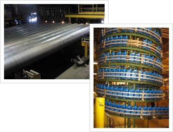

Several of DST's "Factory Authorized Integrator" certifications from control equipment manufacturers have been in "Material Handling Automation." This, because of the variety and depth of DST experience with numerous conveyor types, carousels, and palletizers etc.
From Bulk and Sack Mail conveying systems in Chicago, to plastic pellet screw conveyors in New Jersey, DST knows how to engineer control systems that will get materials of any shape, size, or weight from point A to point B.
Reliable product detection is critical to any material handling system, and DST remains an industry leader in integrating state-of-the-art sensor technologies into custom material handling systems of all kinds. |
|
 |
DST's Material Handling experience includes...
- Custom high-speed, bottled-oil, packaging verification and alarming system with barcode scanners, PLCs, panel PC operator interface with HMI software. Port Author, TX
- 80 foot x 36 inch (8000 pound), natural gas steel pipe manufacturing conveyors with press and seam welding control using PLC and Panel PC touch screen & HMI. Napa, CA
- Four screw conveyors and packaging lines using PLC and custom enunciator panels. Los Angeles, CA
- Hot pallet, computer burn-in packaging lines using PLCs and Macintosh computer GUIs. Fremont, CA
- Bulk Mail and Sack Sorting at multiple USPS Bulk Mail Facilities. PLC, closed circuit TV, UNIX computer application and programming. Bedford Park, IL
- Multi-product, Drum handling and Storage system with custom operator panels for selected drum retrieval. Washington, NJ
- In ground bulk waste screw conveyors with shredder safety and fire suppression (Halon) system controls. Tinton Falls, NJ
- CRT display terminal conveyor system that tests the CRTs as they are loaded into "burn-in" lanes where power is applied to pallets on which the monitors are transported. Fremont, CA
- High speed bar code sortation system for a US Naval Exchange warehouse. Cases are picked from a manifest for delivery to the many Naval Exchanges in the Pacific Theater. San Diego, CA
- High speed bar code sortation system for a stationery wholesale order fulfillment center. Los Angeles, CA
- Automated silicon "chip" conveyor system that moves product on pallets through the stations of an ion deposition chamber. The conveyor precisely positions the pallets at each location in the process. The control system manages the process control areas as well as the indexing conveyor.
|